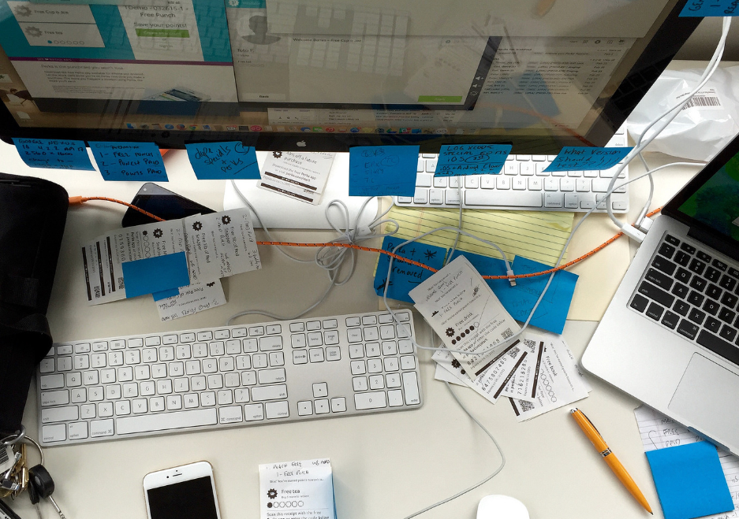
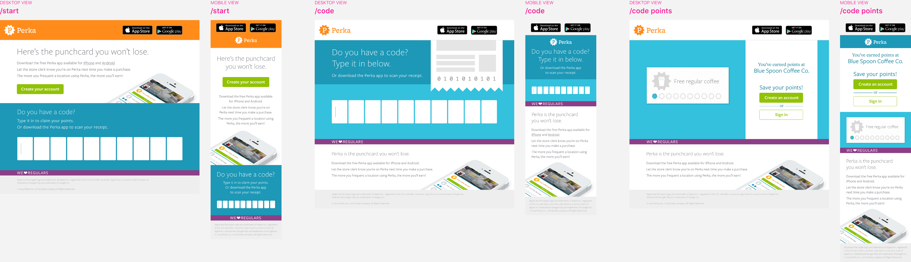
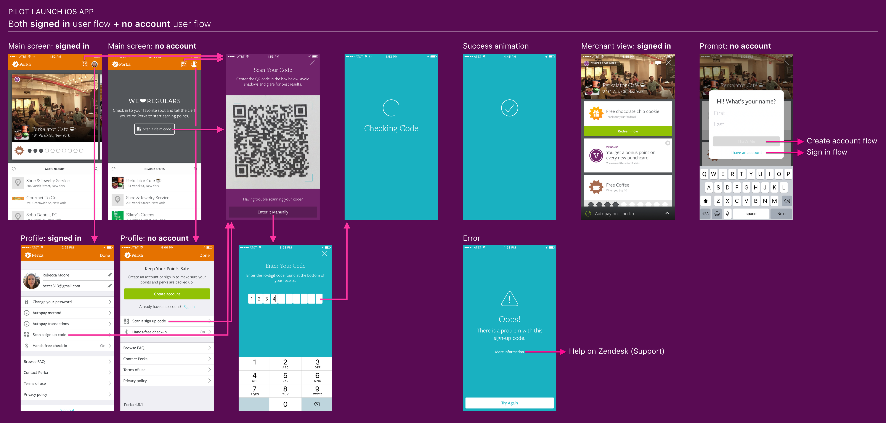
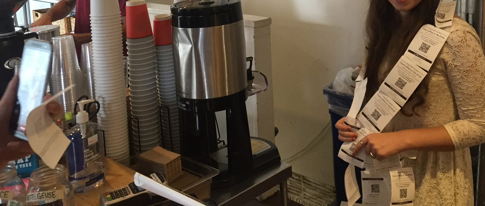
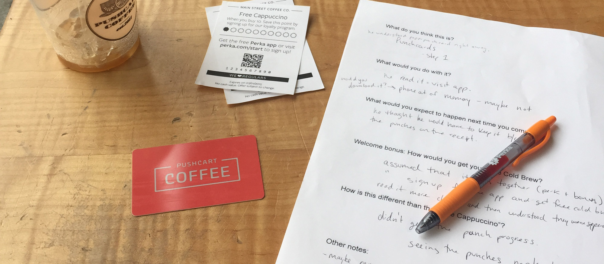
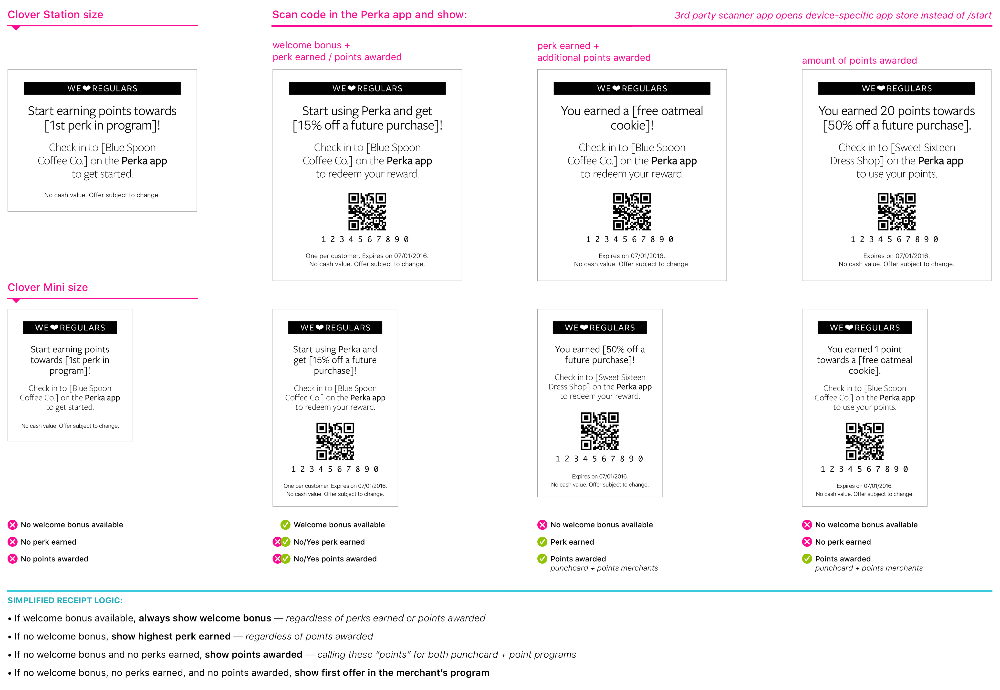
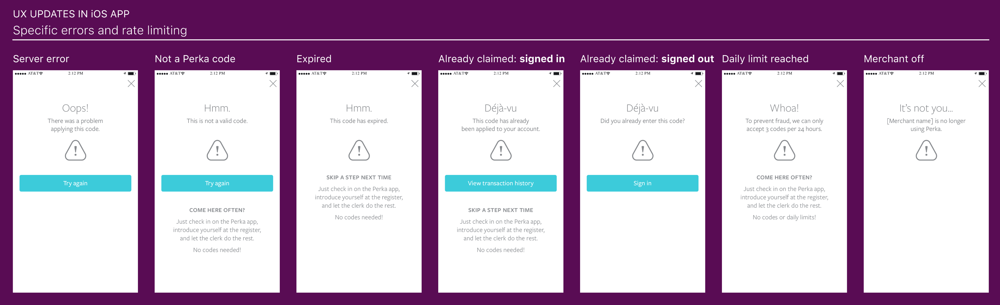
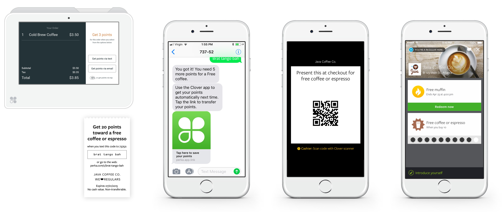

Sign-up code receipts
Expanding merchant reach and customer loyalty with every purchase.
Turned a routine receipt into a loyalty growth engine, driving a measurable increase in Perka app downloads and merchant enrollment rates.
Following Perka's acquisition by Clover, I led the end-to-end redesign of digital, email, and printed receipts, equipping them with scannable sign-up codes that let customers join and earn rewards in seconds.
The result gave merchants a new post-purchase touchpoint they could own, and gave Perka a scalable path to app-less customer experiences.

Pilot launch
Sign-up starts with the receipt
To drive sign-ups, each receipt featured a unique code linked to the transaction, redeemable via the Perka app or web. I simplified the receipt to highlight key rewards and perks only. Initially appended to standard receipts, I designed a separate printout for better visibility and ease of redemption.

To boost app adoption, I designed visually engaging codes that clearly communicated value. Brand elements like the tagline, perk bursts, and punch visuals added a playful, welcoming feel that aligned with Perka's identity.

Web redemption
To support future merchant profiles, I designed a simple MVP: the /code page. It focused on redeeming sign-up codes, showing merchant info and receipt logic post-claim. A card-style UI gave users a preview of the Perka app experience.

App redemption
Perka's lazy registration lets users earn points before creating an account, but this added friction to code redemption. I redesigned the landing screen with a clear app overview and a prominent "Scan Code" CTA. A new QR icon in the header and profile screen ensures all users can easily redeem codes—signed in or not.

Research
User Interviews
After launching sign-up code receipts, the design team conducted user research interviews to evaluate the feature's performance. We worked with a few highly engaged Perka merchants near our NYC office and conducted several user interviews with their customers and clerks to gather insights on the receipt codes.

Key take-aways
- Users felt that the receipt was something they had to keep since it looked like an actual punchcard (with punches). Many said they wouldn't keep it since they have too much already in their wallet.
- More compelled by the welcome bonus than earned points towards a perk.
- Not clear on how to redeem an earned welcome bonus or perk.
- Confusion around something that is earned and something that is on the way to be earned.

Additional research
After conducting research with our internal support team and reviewing Zendesk tickets and data from merchants with high receipt activity, we identified three types of behavior:
- Customer starts by using receipt for some points, then regularly checks in. Occasionally claims a point with a receipt, possibly due to forgetfulness or not having their phone (intended feature use).
- Customer uses receipts to earn points, and checks in only to redeem a perk.
- Customer uses receipts only, and never redeems perks they've earned.
Design improvements
System design
- Simplify logic: when available, only show earned welcome bonus until the user scans the code and can see the cards displayed in the app
- Remove /start CTA for signing up through the website
- Highlight action of "checking in" on the Perka app
- Update copy on receipts to better clarify when an offer is not yet available
- Remove punch icons to look less like an actual punchcard
- Include a Clover Mini-sized receipt for the launch of that new device

Specific errors and rate limiting
To reduce frustration during code redemption, I designed clearer error messages that explain issues and offer next steps. We also added a daily limit of three code claims per account to deter abuse. These updates improved trust, educated users, and protected merchants—while guiding more people toward the intended app experience.

…and beyond

This initiative enabled key innovations including real-time receipt promotions and SMS/MMS enrollment pathways, ultimately evolving into Clover's rebranded "app-less" customer experience.
Role
Senior Product Designer
As the sole Product Designer, I led end-to-end design—user research, ideation, wireframing, high-fidelity mockups, and testing—collaborating with cross-functional teams across app, web, and POS systems.
This team also included a Product Manager, two SQA Analysts, a Senior Software Engineer, two Android Developers, and an iOS Developer, with support from our Design Director.
Impact
By simplifying the enrollment process through Clover receipt codes, we saw a marked increase in merchants creating and actively promoting loyalty programs. This strategic enhancement directly boosted customer enrollment rates and Perka app downloads. The intuitive redesign created measurable increases in platform engagement across both merchant and customer segments, strengthening Perka's market position.